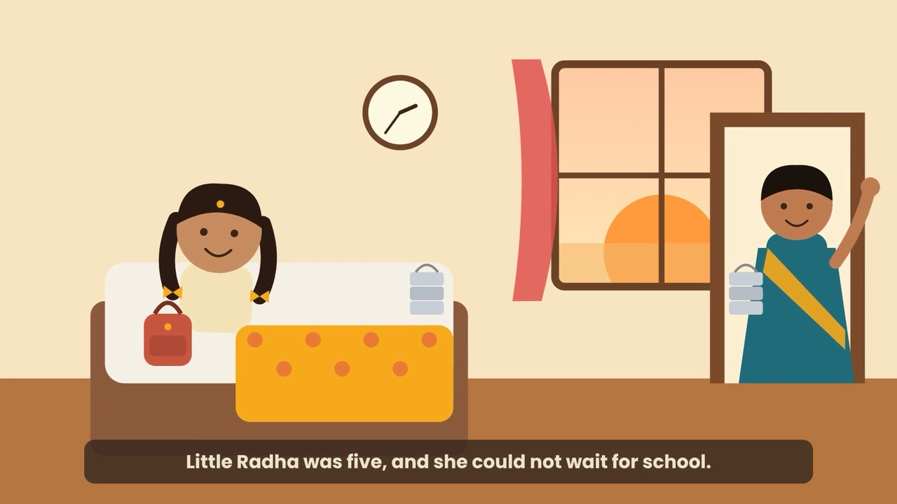
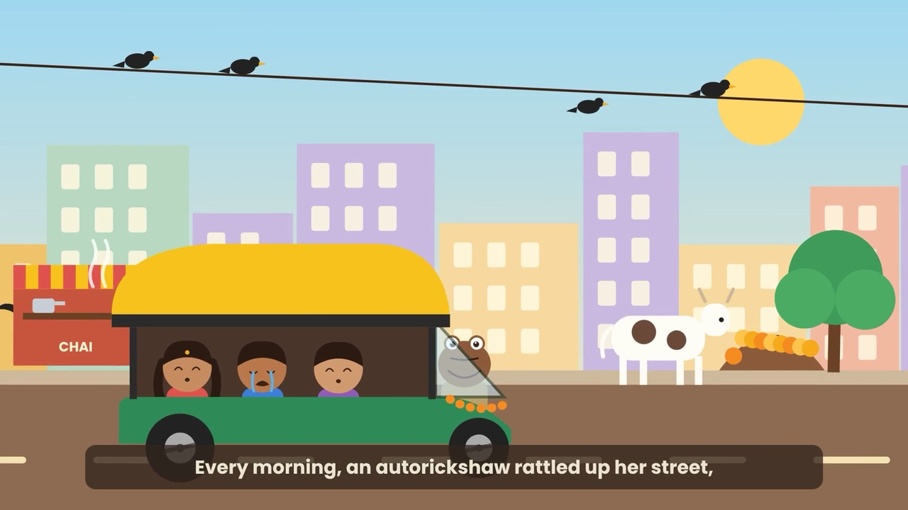
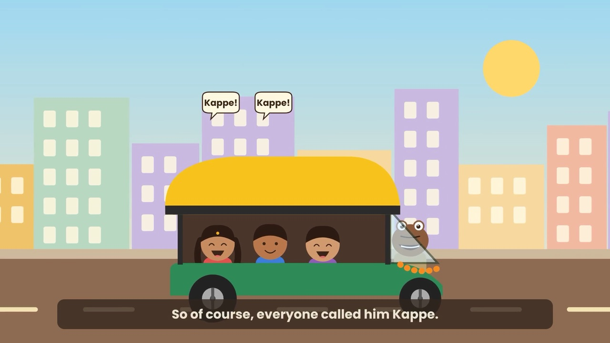
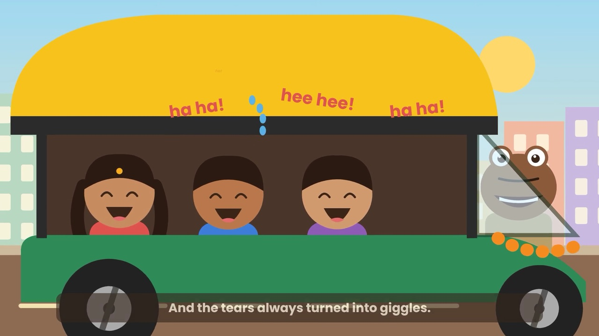
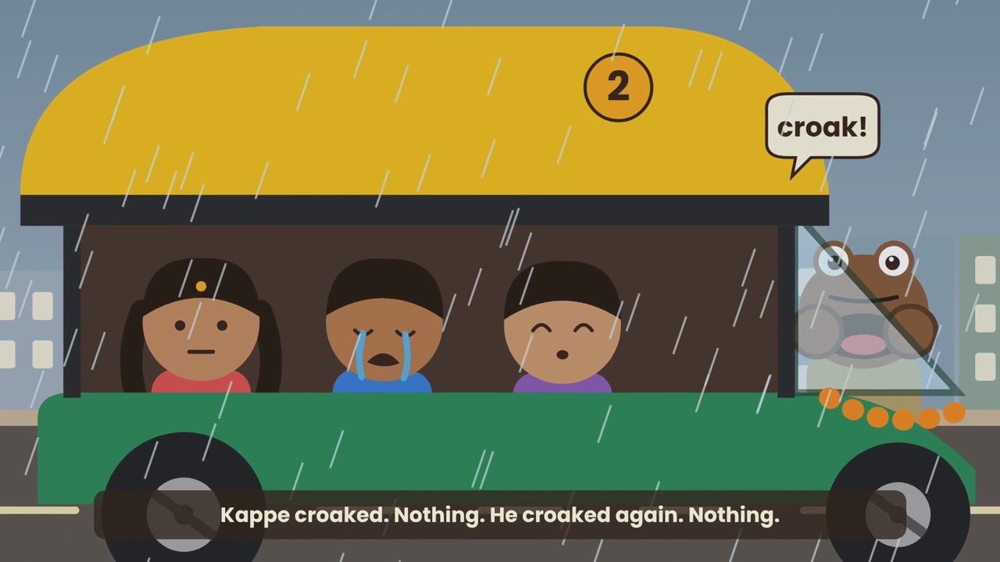
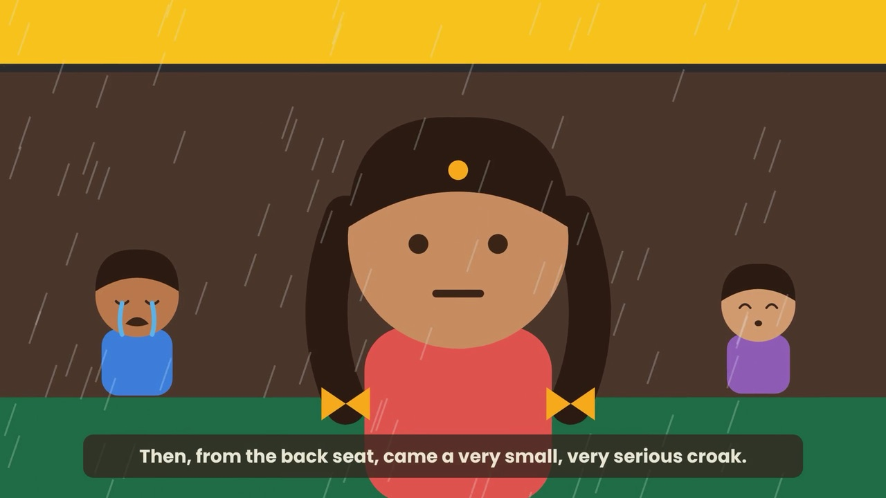

Kappe’s Autorickshaw
A ninety-second animated story about a five-year-old, a rickshaw full of crying children, and the driver who croaked them all the way to school.
The film
The story
Six lines in
How it opens, in the film’s own words.






The rest is in the film.
The word
Why Kappe
ಕಪ್ಪೆ
Kappe
That’s frog in Kannada. The story is inspired by my own school rides.